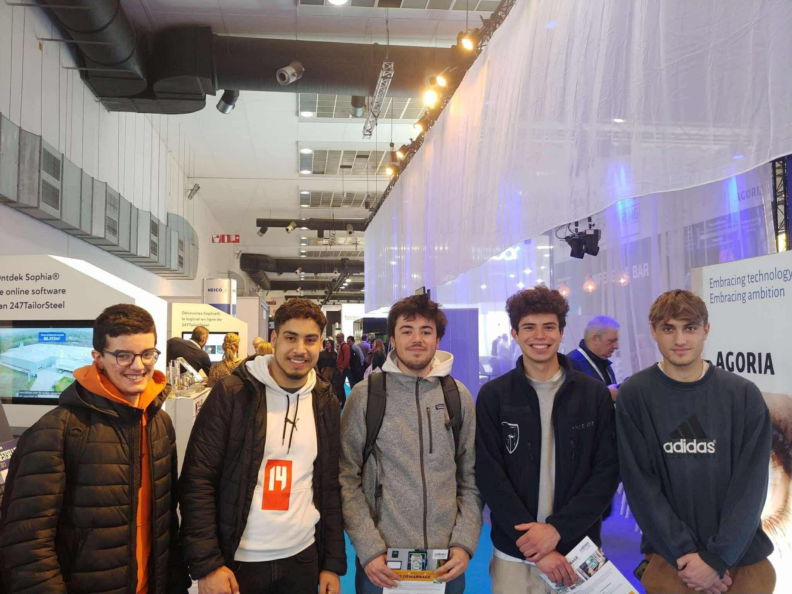

Je m'appelle Nicolas Augusto Schuermans, étudiant en 3e année de bachelier en électromécanique à l'EPHEC à Bruxelles. Passionné par les domaines techniques et les défis pratiques, j’ai construit mon parcours universitaire autour de l’ingénierie, en explorant d'abord les sciences mathématiques à l’ULB, puis l’ingénierie industrielle à l’ECAM, avant de m’engager pleinement dans l’électromécanique à l’EPHEC.
Ce portfolio a pour but de centraliser et valoriser mes compétences, mes expériences et mes projets réalisés tout au long de mon cursus. Il reflète également ma volonté de progresser, de me challenger, et d’intégrer une équipe dynamique pour mon futur stage ou ma future carrière professionnelle.
Organisé, curieux, et persévérant, je m’intéresse particulièrement à la conception mécanique, l’automatisation industrielle et les technologies durables. J’aime également travailler en équipe et relever des défis, comme ceux rencontrés dans nos projets de groupe à l’EPHEC.
Ce portfolio présente mon parcours, mon CV, mes compétences techniques et mes expériences, mais aussi mes centres d'intérêt personnels tels que le sport, les voyages et les nouvelles technologies. N’hésitez pas à consulter les différentes sections ou à me contacter pour en savoir plus !
Le 27 juin 2024, j’ai eu l’opportunité de représenter l’EPHEC lors de sa journée portes ouvertes. En tant qu’étudiant en électromécanique, j’ai accueilli et guidé les futurs étudiants, présenté le programme de formation, ainsi que plusieurs projets réalisés dans le cadre de notre cursus.
Cette expérience m’a permis de développer mes compétences en communication, de partager mon parcours avec enthousiasme, et de contribuer activement à la vie de mon école. C’était également une belle occasion de valoriser les formations techniques proposées à l’EPHEC auprès d’un public curieux et motivé.
J’ai également participé à la Journée "Entreprendre ton Futur", organisée par l’EPHEC. Cet événement avait pour objectif de rapprocher les étudiants du monde professionnel. Plusieurs entreprises issues de secteurs variés sont venues présenter leurs activités, leurs métiers et leurs attentes en matière de recrutement.
Ce fut une occasion précieuse pour échanger directement avec des professionnels, poser des questions concrètes sur les opportunités de stage ou d’emploi, et mieux comprendre les compétences recherchées sur le marché. Cette expérience m’a aidé à affiner mes choix d’orientation et à renforcer ma motivation à m’investir dans un projet de carrière solide.
Dans le cadre de ma formation en électromécanique à l'EPHEC, j’ai pris l’initiative de participer à plusieurs salons techniques afin de découvrir les innovations industrielles, les tendances du secteur et d'étendre ma compréhension du monde professionnel.
En 2023, j’ai visité le Salon de Machineering, organisé au Palais 12 de Bruxelles. Ce salon généraliste orienté vers les technologies industrielles m’a permis de rencontrer des entreprises actives dans les domaines de l’automatisation, de la fabrication mécanique, des composants électriques, et plus encore. J’ai pu échanger avec des professionnels, découvrir des démonstrations en direct, et mieux comprendre les réalités de terrain dans les métiers de l’électromécanique.
En 2024, je me suis rendu au salon Pump & Valve à Anvers, spécialisé dans les technologies de pompage, de robinetterie industrielle et de traitement des fluides. Cette visite a été particulièrement enrichissante, car elle m’a permis de faire le lien entre plusieurs cours (hydraulique, maintenance, automatisation) et des applications concrètes utilisées dans l’industrie. J’y ai également découvert de nouveaux matériaux, des solutions innovantes pour la gestion de l’eau et de l’énergie, ainsi que des technologies émergentes dans le contrôle de procédés industriels.
Ces visites ont renforcé ma motivation à m’impliquer dans un environnement industriel, à rester à jour sur les évolutions techniques, et à construire un réseau professionnel dans mon domaine.
Salon Pump & Valve (Anvers, 2024)

Salon Machineering (Bruxelles, 2023)
Centres d’intérêt
Sport : hockey, randonnée
Technologie : aéronautique, énergies renouvelables
Voyages et aventure
Analyse SWOT personnelle
Forces (S)
Faiblesses (W)
Opportunités (O)
Menaces (T)
• Bonne base technique en électromécanique
• Capacité à travailler en équipe
• Polyglotte : français, espagnol, néerlandais, anglais
• Organisé, motivé et curieux
• Manque d’expérience professionnelle longue durée
• Maîtrise encore limitée de certains logiciels spécialisés
• Marché technique en demande constante de profils qualifiés
• Opportunités de stage via l’EPHEC
• Intérêt pour les énergies renouvelables et l'automatisation
• Concurrence sur le marché du travail
• Incertitude économique et instabilité du secteur industriel
• Évolution rapide des technologies
Projet personnel – Aménagement de mon van
En parallèle de ma formation, j’ai réalisé un projet personnel ambitieux : l’aménagement complet d’un van pour partir en roadtrip. Ce projet m’a permis de mettre en pratique mes compétences en conception mécanique, en électricité et en organisation de projet.
J’ai d’abord conçu l’ensemble du mobilier en 3D à l’aide du logiciel Autodesk Inventor, en veillant à optimiser l’espace de vie et de rangement. Chaque meuble a été modélisé avec précision pour garantir une fabrication efficace et fonctionnelle.
J’ai également réalisé un schéma électrique complet du système embarqué, comprenant l’éclairage LED, la batterie auxiliaire, les prises USB et les protections fusibles. Cette étape m’a demandé une réflexion sur la sécurité, la distribution de la puissance et l’autonomie du véhicule.
Ce projet m’a permis de combiner mes connaissances techniques à une réalisation concrète, tout en développant ma rigueur, ma créativité et ma capacité à résoudre des problèmes pratiques.
Plan 3D réalisé sur Inventor – meuble principal du van